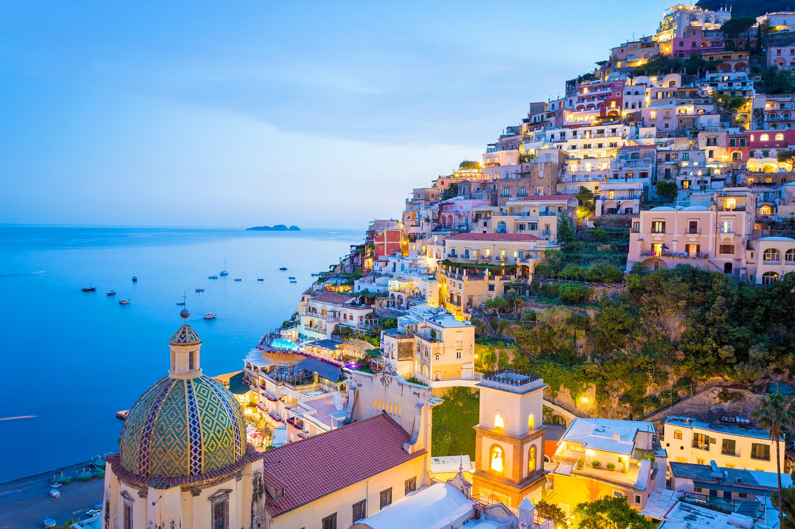

Italy Travel Guide
Why should you visit Italy?
Italy is filled with riches. It offers you spectacular cities, ancient ruins, wonderful museums, soaring mountains, great beaches, and beautiful natural scenery – all packed in one. No wonder, it features in the bucket lists of a lot of people.
Places to visit
-
Almafi - this Italian town is a combination of centuries of intricate history, dramatic natural scenery, and delicious fresh seafood.

-
Milan - known for the majestic Duomo Cathedral, the outstanding opera La Scala, the medieval Sforza Castle, and the dazzling Vittorio Emanuele II shopping arcade.
-
Rome - famous for the Colosseum, the Roman Forum, and a sprawling metropolis of Classical architecture.

-
Venice - known also as the “City of Canals,” “The Floating City,” and “Serenissima,” is arguably one of Italy's most picturesque cities.
-
Florence - noted for its culture, Renaissance art and architecture and monuments. The city also contains numerous museums and art galleries, such as the Uffizi Gallery and the Palazzo Pitti.
-
Naples - Neapolitan cuisine is noted for its association with pizza, which originated in the city, as well as numerous other local dishes.

What to eat in Italy
Italy has a wide range delicious food. Here are some must try dishes and where to find them.
Pizza
You can find pizza literally all over Italy. Almost every restaurant will have its own version which will vary in different regions and even from the restaurant next door!
Pesto
This is another delicacy that can be found all over Italy, but it is particularly popular in the port city of Genoa where it originated.
Tiramisu
Tiramisu can be found all throughout Italy. Many regions of the country claim to be the inventor of Tiramisu, but wherever you eat it, you’ll love it.
Artichokes
This dish is now symbol and specialty in the Jewish community in Rome that can be found being sold in the outdoor markets of Rome and also at Jewish restaurants like Ba’Ghetto.
Lasagna
Lasagna can be found all over Italy, but it supposedly originated in the Emilia-Romagna region.

Authentic Olive Oil
Go to a local market and find the grower directly.